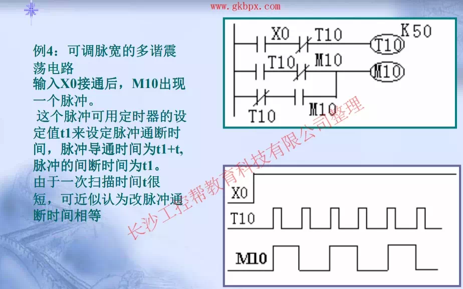
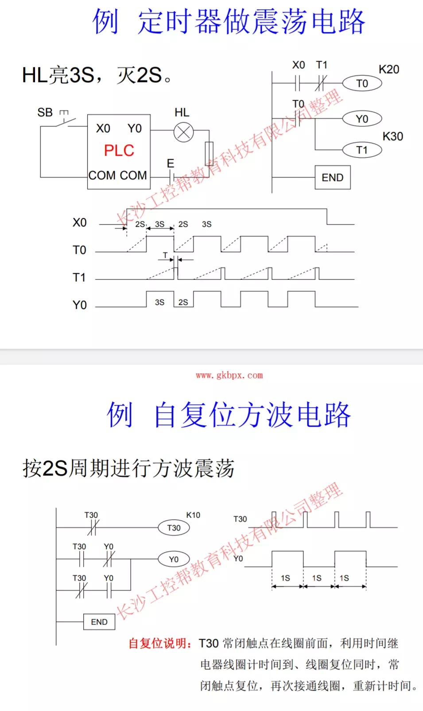
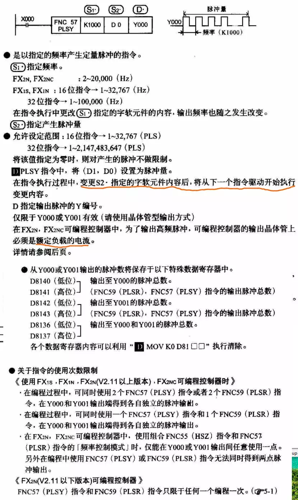
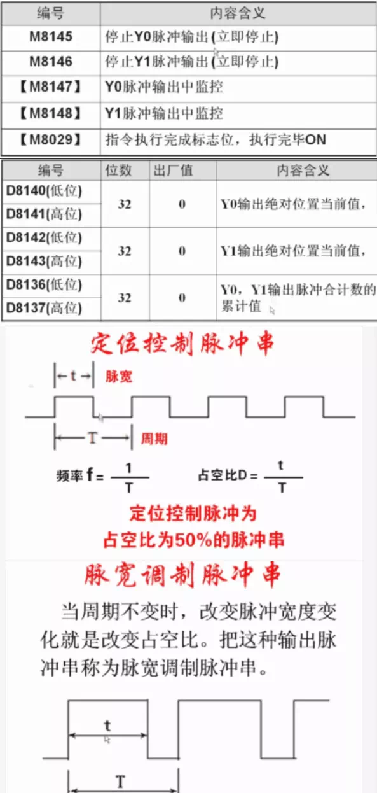
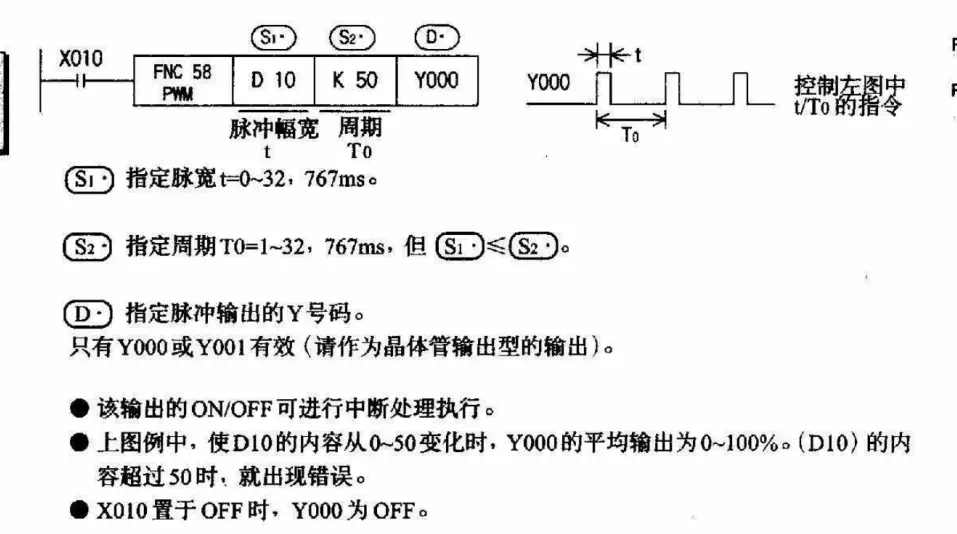
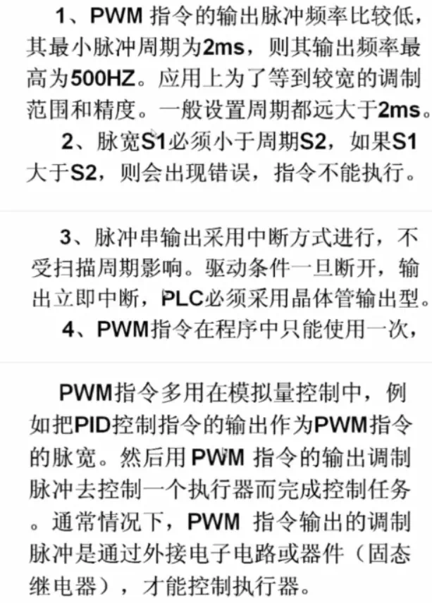
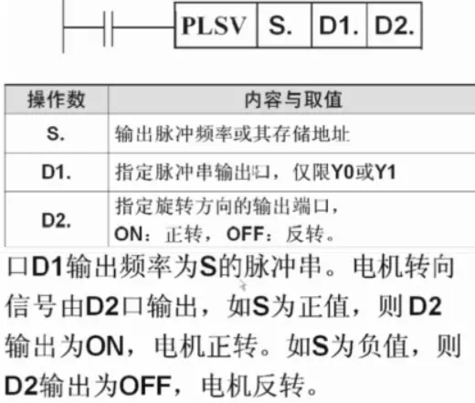
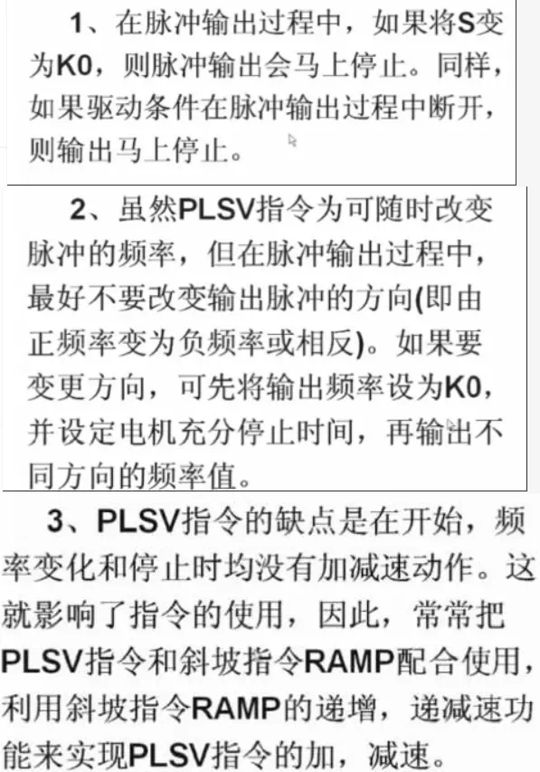
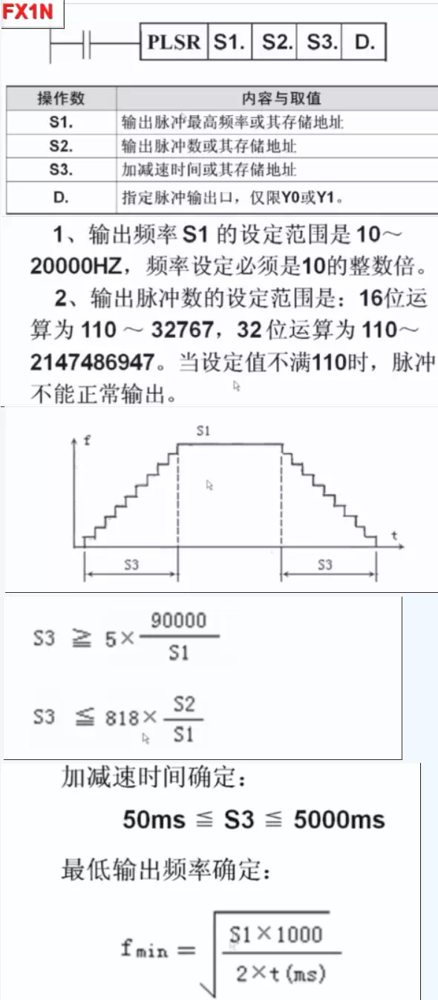

定时器可调脉宽多谐震荡电路，多谐振荡,定时器做震荡电路,自复位方波电路 什么是多谐振荡器 多谐振荡器是一种能产生矩形波的自激振 荡器，也称矩形波发生器。在接通电源后，不 需要外加脉冲就能自动产生矩形脉冲！ 多谐振荡器：利用深度正反馈，通过阻容 耦合使两个电子器件交替导通与截止，从而自 激产生方波输出的振荡器。常用作方波发生 器。 PLSV_可变速脉冲输出 PLSR_带加减速脉冲输出 PWM_脉宽调制 关于指令的使用次数限制 脉宽调制脉冲串；定位控制脉冲串         